Ceratose pilar é uma desordem genética da queratinização dos folículos pilosos da pele, caracterizada por hiperqueratinização. É uma condição benigna, extremamente comum, que se apresenta como pequenas pápulas queratósicas ásperas na pele.
Etiopatogenia
Ainda com etiologia indefinida, têm herança genética, com história familiar positiva em mais de 50% dos casos. Relaciona-se a situações que predispõem a pele seca, ictiose, xerose, dermatite atópica. Apresenta também relação estatisticamente significante entre o problema e um índice de massa corpórea maior que 25. Em um estudo realizado com 13 pacientes de Acantose Nigricante (doença sinalizadora de diabetes), 9 possuíam ceratose pilar, o que indica essa possível associação entre as patogenias. Acredita-se que haja uma hiperqueratinização ao redor do folículo piloso, que quando obstruído dá origem a pápulas queratósicas, que surgem a partir do acúmulo de queratina sobre o óstio folicular. Mutações no gene da filagrina têm correlações com ceratose pilar, já que essa proteína é a responsável pela queratinização da pele. Muitos pacientes adquirem um eritema ao redor do folículo, sendo indicativo de processo inflamatório.
Epidemiologia
Doença muito comum, acomete preferencialmente crianças e adolescentes. Estima-se que 50 a 80% dos adolescentes sejam atingidos pela dermatose e aproximadamente 40% dos adultos. Normalmente as mulheres são mais afetadas que os homens. Apresenta períodos de melhora no verão e piora no inverno, provavelmente pelo clima seco imposto pela estação.
Quadro clínico
Caracteriza-se por pápulas queratósicas foliculares, de textura áspera, alguns pacientes descrevendo um aspecto de “lixa”, principalmente em faces extensoras de braços e coxas, mas podem acometer nádegas, tronco e até face. Eritema pode ser visto, se inflamação estiver presente. Normalmente assintomáticas, mas eventualmente podem ser pruriginosas. E apesar do caráter benigno, tem grande impacto estético nos pacientes. Queratose pilar atrofiante da face (Ulerythema ophryogenes) é descrita como uma variante incomum, caracterizada por pápulas eritematosas na face principalmente em bochechas e sobrancelhas. Pode ocorrer perda de pêlo na área afetada. A queratose pilar rubra (KPR) é um grupo raro de doenças hereditárias idiopáticas de queratinização, e é considerada como variante da queratose pilar. É caracterizada por um eritema bem definido e pequenas pápulas foliculares ceratóticas que são vistas nas bochechas e na área pré-auricular. A queratose pilar rubra é uma situação esteticamente angustiante, e principalmente o eritema vascular é a queixa mais comum.
Diagnóstico
A ceratose pilar é um diagnóstico clínico baseado na história e nos achados do exame físico. No entanto, a avaliação das lesões cutâneas com o dermatoscópio pode auxiliar no diagnóstico. Anormalidades do folículo piloso serão exibidas ao visualizar as pápulas com um dermatoscópio. Os fios de cabelo podem ser finos e curtos, enrolados ou embutidos no estrato córneo. Descamação e eritema também estarão presentes na dermatoscopia. Uma biópsia geralmente não é necessária para o diagnóstico. Foliculite, dermatite atópica, milium, acne vulgar e escorbuto são diagnósticos diferenciais.
Tratamento
Como a doença tem origem genética, nenhum tratamento curativo é viável. Dessa forma, deve-se orientar o paciente sobre a necessidade da continuidade do tratamento. Medidas gerais para prevenir o ressecamento da pele são fundamentais, assim como uma boa hidratação. Uso de cremes queratolíticos é essencial para o tratamento. Opções terapêuticas incluem uso de ácido lático, ácido glicólico, ácido salicílico, cremes de ureia, adapaleno e outros retinoides. Cremes esteroides para o componente eritematoso podem ser usados. Uma rotina de composto ureia e ácido salicílico 2 vezes ao dia tem boa resposta. Uso intermitente de retinoides tópicos, semanalmente ou quinzenalmente pode ser útil. Tacrolimus, pimecrolimus podem ser opções para pacientes com componente inflamatório importante e resistente à retirada do corticoide. Alguns estudiosos indicam o uso de terapia fotodinâmica. Nos últimos anos, o laser pró-amarelo (577 nm), sistema de laser com comprimento de onda de luz amarela, vem sendo utilizado como alternativa para a busca de tratamento mais eficaz principalmente em lesões vasculares. O laser de CO2 também tem sido usado com sucesso de até 33%. Também tem sido usados Nd-YAG, Alexandrite e diodo 810nm. O laser Nd:YAG de 1064 nm foi usado com as seguintes configurações: 4,0~5,0 J/cm2, spot size de 4 mm e três passadas a cada duas semanas num total de 10 sessões.
REFERÊNCIAS BIBLIOGRÁFICAS
1. A Pilot Study of Q-switched 1064-nm Nd:YAG Laser Treatment in the Keratosis Pilaris. Juhee Park, Beom Joon Kim, Myeung Nam Kim, Chang Kyun Lee. Ann Dermatol. 2011 Aug; 23(3): 293–298.
2. Keratosis pilaris rubra successfully treated with topical sirolimus: Report of a case and review of the literature. Alexandra Eckburg, Tiana Kazemi, Sheilagh Maguiness. Pediatr Dermatol. 2022 May-Jun; 39(3): 429–431.
3. A Review of the Scoring and Assessment of Keratosis Pilaris. Madeline A. Wang, Anna Wilson, Dédée F. Murrell. Skin Appendage Disord. 2023 Aug; 9(4): 241–251.
4. A Narrative Review on the Role of Acids, Steroids, and Kinase Inhibitors in the Treatment of Keratosis Pilaris. Shreya Reddy, Hetal Brahmbhatt. Cureus. 2021 Oct; 13(10): e18917.
5.Efficacy and Safety of Long-Pulsed 755-nm Alexandrite Laser for Keratosis Pilaris: A Split-Body Randomized Clinical Trial. Man Li, Yue Bai, Zhixuan Duan, Ruofei Yuan, Xiaoduo Liu, Yi Liu, Xuelei Liang, Haixuan Wu, Fenglin Zhuo. Dermatol Ther (Heidelb) 2022 Aug; 12(8): 1897–1906.
Atlas de imagens 30


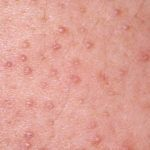

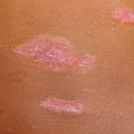


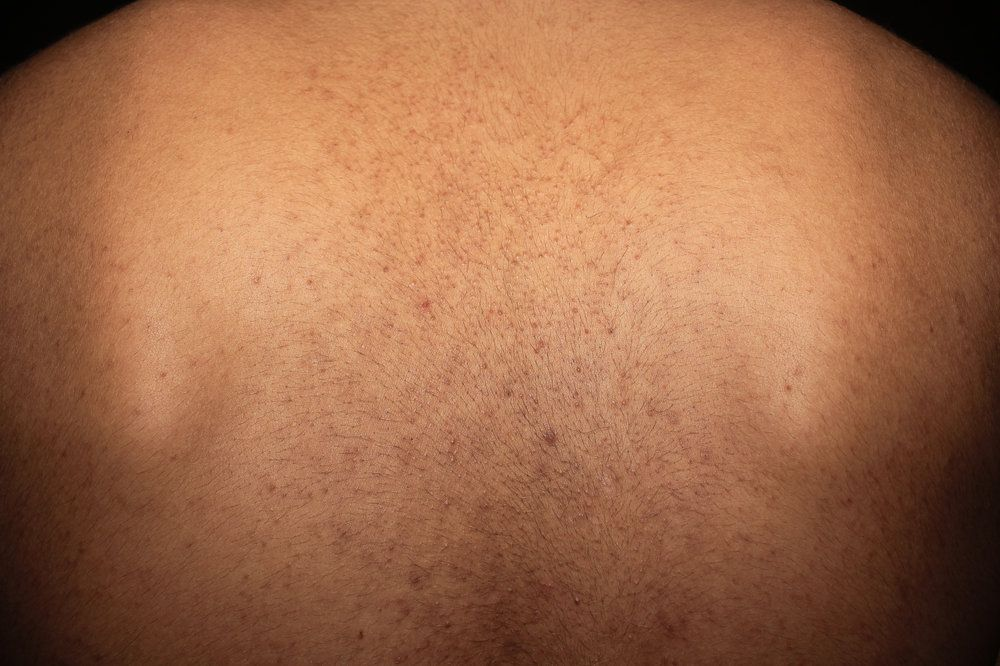

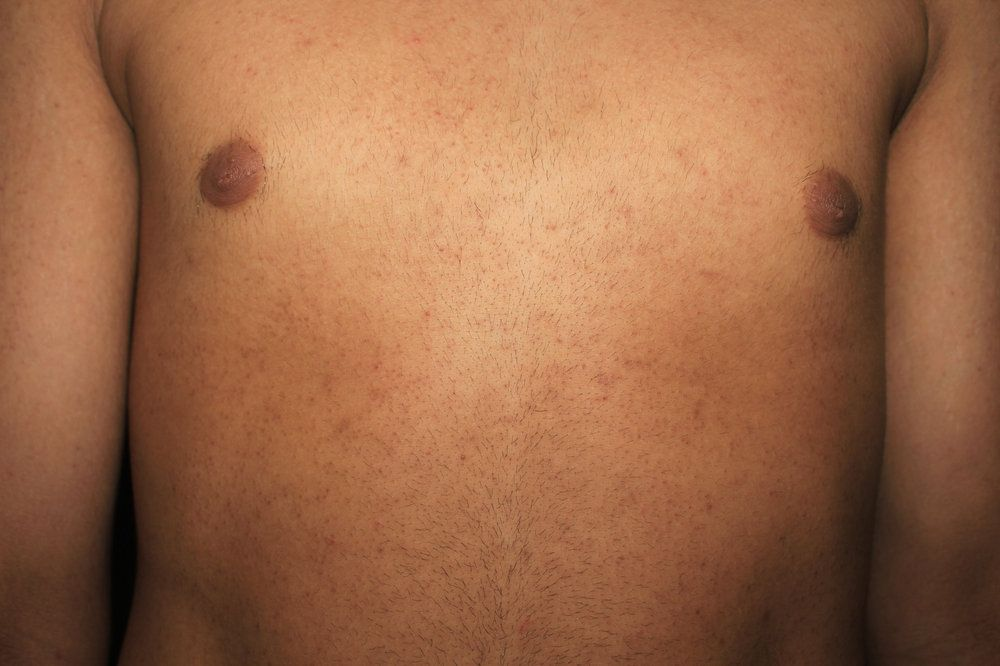

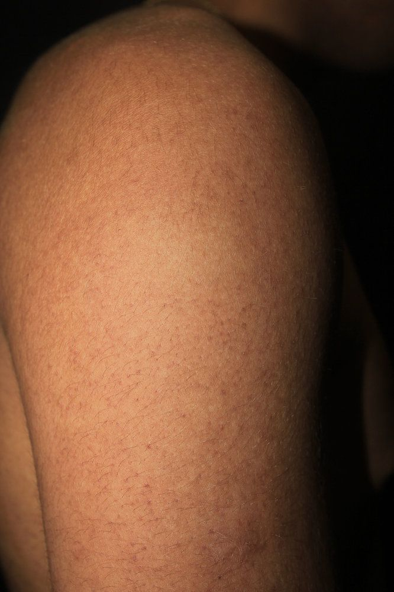

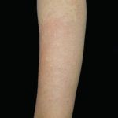

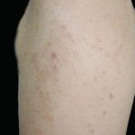

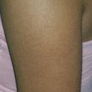

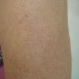

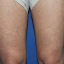

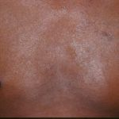

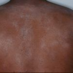


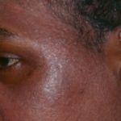

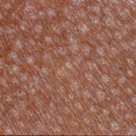

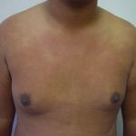

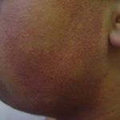

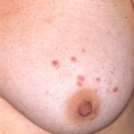

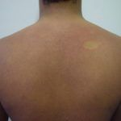

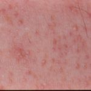

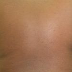

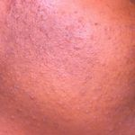

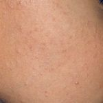

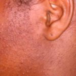

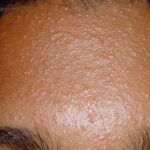

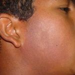

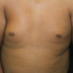

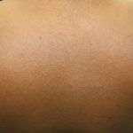
Na Skin Prime
Como podemos ajudar
Entre os recursos citados para Ceratose Pilar, estes estão disponíveis na clínica:
Tratamentos
Diagnóstico